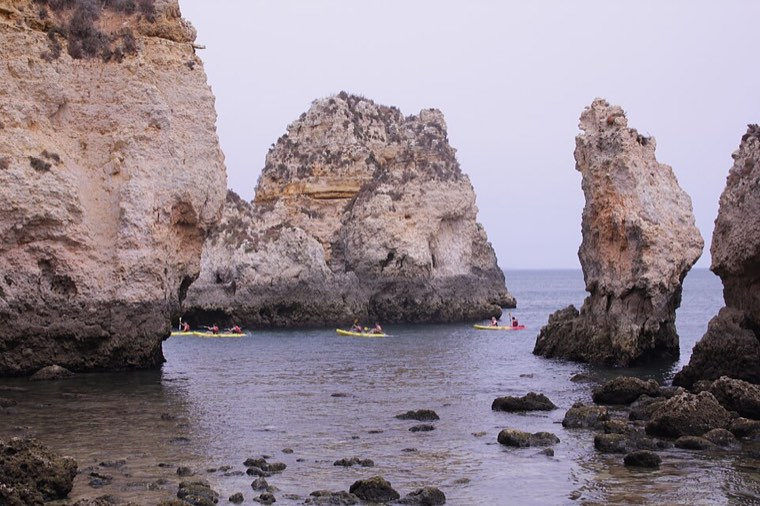
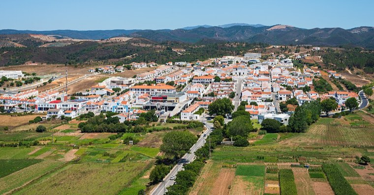
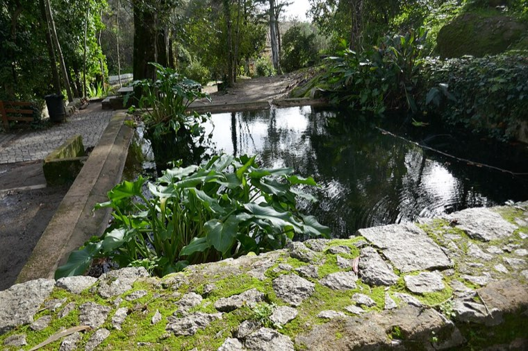
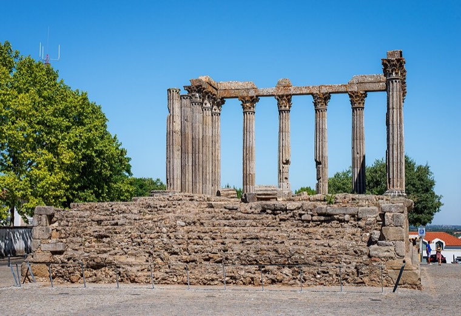
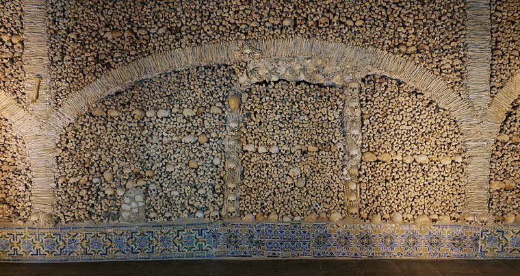
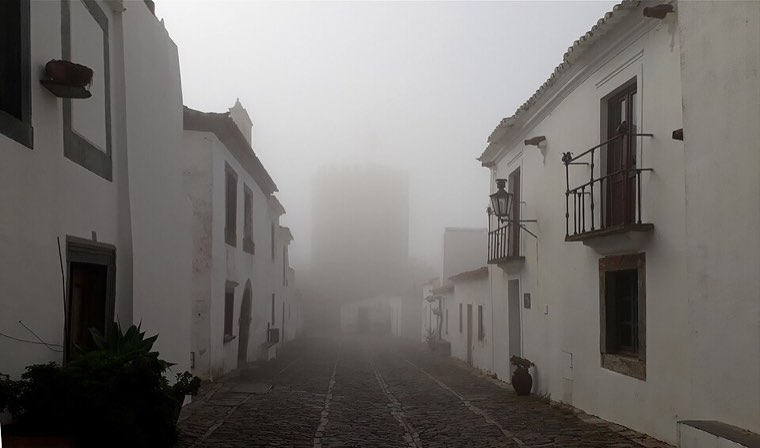
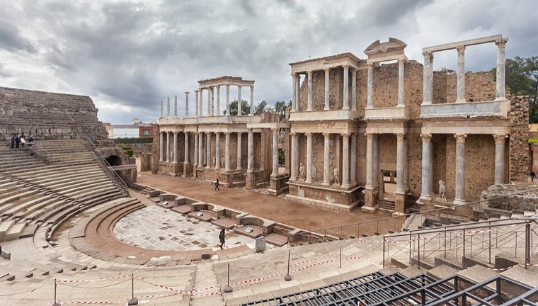
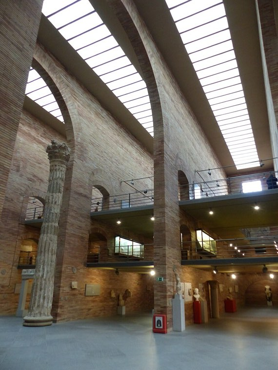
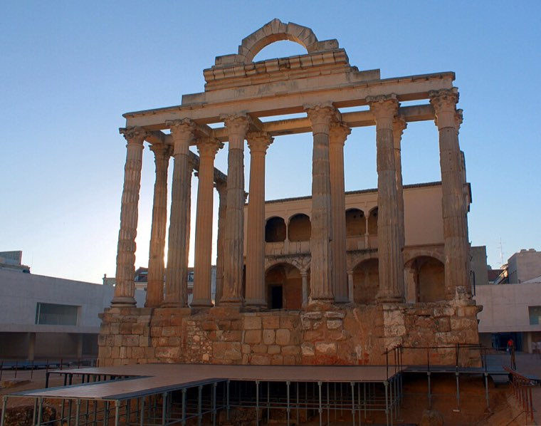

Quatro pessoas, a sair de Olhalvo. A prioridade são jogos-enigma: pelo menos um escape room numa sala e um jogo de pistas ao ar livre. O destino deve ser mais quente do que Olhalvo e ter piscina interior ou spa. Os concertos de música clássica saíram do plano.
É a zona mais quente da lista, com cerca de +2 °C de dia e de noite em relação a Olhalvo. O jogo ao ar livre é o SOS H2ORANGE da Escape In Games, 2h pelas ruas de Silves. Não precisa de marcação e o bilhete vale 1 ano, por isso jogam na hora em que não estiver a chover. O escape room numa sala é o Holy Trap, em Lagos. O hotel é o Jupiter Algarve, na Praia da Rocha: 4★, piscina coberta e aquecida no inverno e Soul Spa com massagens. Fica a 20 min de Silves e a 25 min de Lagos. Há ainda o Festival da Batata-doce em Aljezur.



| Jupiter Algarve · 2 quartos × 2 noites a €95–120 | €380–480 |
| Piscina interior | incluída |
| Massagem de anos | €50–70 |
| SOS H2ORANGE, Silves (até 5 pessoas) | ~€40 |
| Holy Trap escape room (grupo) | €60–90 |
| Festival (entrada grátis) + compras | €20–40 |
| Refeições · €35–45/pessoa/dia | €350–450 |
| Combustível + portagens (~630 km) | €100–120 |
| Total | €1.000–1.290 |
Confirmar: as datas do festival (a Visit Algarve diz 27–29, mas outra página diz 28–30; Câmara de Aljezur: 282 990 010). Confirmem também os horários e o preço do Holy Trap. O jogo de Silves não precisa de marcação. Confirmem no Booking a nota e o preço do Jupiter para sexta e sábado. Se passar muito de €100, o Vila Galé Lagos (4★, 8,6, piscina interior) é a alternativa.



| Évora Olive (9,0) ou Vila Galé (8,6) · 2 × 2 noites a €70–110 | €280–440 |
| Escape Tours (equipa) | €30 |
| Escape room | €50–70 |
| Monumentos | ~€40 |
| Massagem de anos | €50–65 |
| Refeições · €35–45/pessoa/dia | €350–450 |
| Combustível + portagens (~310 km) | €50–65 |
| Total | €850–1.160 |
Contra: não é mais quente do que Olhalvo, e as noites são ~1 °C mais frias. Os preços de alguns escape rooms vêm de listagens antigas, por isso confirmem.



| Parador de Mérida · 2 quartos × 2 noites a €75–100 | €300–400 |
| myCityHunt × 4 | ~€52 |
| Escape room (grupo de 4) | €60 |
| Monumentos (entrada conjunta) × 4 | ~€70 |
| Massagem de anos | €50–65 |
| Refeições · €30–40/pessoa/dia | €300–400 |
| Combustível + portagens (~620 km) | €90–110 |
| Total | €920–1.160 |
Contra: é o sítio mais frio da lista à noite, e não confirmei nenhum hotel com piscina interior. A imprensa espanhola fala de eleições gerais a 29 de novembro.
| Silves + Lagos + Aljezur | Évora | Mérida | |
|---|---|---|---|
| Mais quente que Olhalvo? | Sim, ~+2 °C | Não | Não, noites frias |
| Escape room (sala) | Holy Trap, em Lagos | Puzzle Room, 100Escape, Escape in City | Bunker da II Guerra, Evasión Mérida |
| Jogo ao ar livre | SOS H2ORANGE em Silves (Adventure Hunt em Lagos como alternativa) | Escape Tours, myCityHunt | myCityHunt (3h, 4,2 km) |
| Jogos (nota) | ★★★★★ | ★★★★★ | ★★★★☆ |
| Hotel (4★+, nota 8+) | Jupiter Algarve, 8,8, com piscina interior e spa | Évora Olive, 9,0, ou Vila Galé, 8,6, com piscina interior | Parador, ~8,1, sem piscina interior |
| Extra | Festival da Batata-doce, castelo de Silves | Património UNESCO | Luzes de Natal, Roma antiga |
| Total estimado (4 pessoas) | €1.000–1.290 | €850–1.160 | €920–1.160 |
| Por pessoa | €250–325 | €215–290 | €230–290 |
Os totais incluem 2 quartos por 2 noites, jogos, uma massagem para a aniversariante, refeições, combustível e portagens. São estimativas a partir de anúncios públicos.
A previsão do tempo para 27–29 de novembro só fica fiável a partir de ~17–20 de novembro. Até lá, o melhor indicador é o que aconteceu nestes mesmos dias (22 nov – 3 dez) nos últimos 10 anos, de 2016 a 2025, com dados do arquivo Open-Meteo. Os tempos de viagem foram calculados pelo OpenStreetMap, sem trânsito.
| Local | Carro desde Olhalvo | Máxima média | Mínima média | Dias com chuva | Sol / dia |
|---|---|---|---|---|---|
| Olhalvo (referência) | — | 15,7 °C | 9,0 °C | 36% | 7,0 h |
| Silves | 3h06 · 270 km | 17,6 °C +1,9 | 10,8 °C +1,8 | 28% | 7,9 h |
| Lagos | 3h32 · 314 km | 17,8 °C +2,1 | 11,1 °C +2,1 | 31% | 7,9 h |
| Aljezur | 3h27 · 256 km | 16,9 °C +1,2 | 11,9 °C +2,9 | 32% | 7,9 h |
| Monchique (Caldas) | 3h25 · 279 km | 16,1 °C +0,4 | 9,1 °C +0,1 | 29% | 7,8 h |
| Évora | 1h52 · 152 km | 15,4 °C −0,3 | 7,8 °C −1,2 | 32% | 7,1 h |
| Mérida | 3h26 · 308 km (+1h fuso) | 15,3 °C −0,4 | 6,7 °C −2,3 | 33% | 6,7 h |
Resumo: só o Algarve (Silves, Lagos e Aljezur) é mais quente do que Olhalvo, com cerca de +2 °C de dia e de noite. Évora e Mérida têm temperaturas parecidas de dia e são mais frias à noite. Em todos os sítios chove em cerca de 1 em cada 3 dias, por isso convém ter sempre um plano coberto, como o escape room ou a piscina.
Em Silves, nestes dias, a chuva é curta. Nos últimos 10 anos houve em média só 0,7 h de chuva entre as 10h e as 18h, e em 96% dos dias houve pelo menos 3 horas seguidas sem chuva nesse horário. Chove em 28% dos dias, menos do que em Olhalvo (36%). Às 15h estão em média 17 °C, por isso chega um casaco leve. Como o bilhete não tem marcação e vale 1 ano, não fixem a hora: decidam na véspera, com a previsão, se jogam no sábado à tarde ou no domingo de manhã. Se chover o fim de semana todo, ficam o escape room coberto em Lagos e a piscina, e o bilhete continua válido.
O Booking bloqueia consultas automáticas, por isso não consegui ler a nota ao vivo. As notas abaixo vêm de excertos de páginas do Booking em pesquisas (“Booking”) ou de agregadores que mostram a nota do Booking (“via agregador”). Confirmem no Booking antes de reservar. Os preços são indicativos, de uma noite de semana em novembro, por isso o fim de semana deve sair mais caro.
| Hotel | Estrelas | Nota Booking | Piscina interior | Spa / massagem | Preço indicativo |
|---|---|---|---|---|---|
| Jupiter Algarve, Praia da Rocha · escolha | 4★ | 8,8 (via agregador, 1.372) · 8,7 (Booking) | Sim, coberta e aquecida no inverno | Soul Spa, massagens pagas | ~€95 |
| Vila Galé Lagos, Meia Praia | 4★ | 8,6 (Booking) | Sim, no spa Satsanga | Sim, massagens pagas | ~€75–115 |
| Clube Porto Mós, Lagos | 4★ | 8,6 (Booking, avaliações antigas) | Sim, aquecida | Sauna, massagem paga | — |
| Évora Olive Hotel · escolha Évora | 4★ | 9,0 (via agregador, 4.484) | Sim, todo o ano | Massagens pagas | ~€55–90 (confirmar) |
| Vila Galé Évora | 4★ | 8,6 (Booking) | Sim, aquecida | Spa Satsanga | — |
| Évora Hotel | 4★ | 8,1 (via agregador) | Sim, aquecida | Spa, sauna, massagens | ~€120 |
| Parador de Mérida | 4★ | ~8,1 (fora do Booking) | Não, só exterior sazonal | Sauna e ginásio | — |
Excluídos: o Villa Termal de Monchique tem nota ~7,5 em todos os sites e tanto aparece como 3★ como 4★. O Velada Mérida tem 7,8. Em Mérida nenhum hotel de 4★+ tem piscina interior.